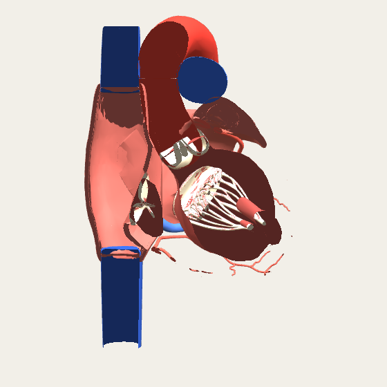

The scan, back in the surgeon's hands
NOVA turns a patient's CT or MRI into a 3D model a surgeon can turn, zoom and cut open with bare hands. Nothing to touch, so nothing to contaminate.
Once a surgeon scrubs in, the scan stays out of reach
- 1
The surgeon can't touch the screen
It's outside the sterile area. They have to step away or ask someone else.
- 2
Scans are flat 2D images
The surgeon has to picture the 3D organ in their head.
- 3
That slows surgery down
Extra mental work at the moments that matter most.
Hundreds of flat slicesrebuilt in the surgeon's head
Built to reach people, not just hospitals that can pay
surgical procedures a year worldwide
people without safe, affordable surgery
devices: laptop, webcam, monitor
Easy to implement
Simple to adopt
Fewer barriers
People reached
Figures: Lancet Commission on Global Surgery, 2015.
Four stages behind one webcam
From a labelled scan to a model the surgeon handles in real time.
Scan to model
Labelled CT or MRI becomes meshes in real millimetres, from each scan's voxel spacing.
Hands, tracked
Computer vision finds both hands and their pose in the live webcam feed.
Gesture to action
Pinch to turn, spread to zoom, a flat palm to slice. Low latency.
A second pair of eyes
A vision language model flags regions worth a second look.
Your palm is the scalpel
Gestured incisions
Move your palm through the model to slice it.
Sterile by design
Just a webcam. The surgeon stays sterile.
True to anatomy
Real patient scans become real 3D models.
Safe AI
It can only point things out. It can't take actions on its own.
The AI flags, the surgeon decides
Access
Programs without sim labs and hospitals without navigation suites still get patient-specific 3D, on hardware they own.
Usefulness
Every name and teaching line is cited and reviewed. Nothing clinical is invented at runtime.
Control
The AI never diagnoses or acts. Cutting must be armed, and disarms after three idle minutes.
Texture differs from the surrounding tissue in this region.
Real scans, real models
Three public CT datasets and one anatomical atlas. 45 labelled CT cases in all.
3D-IRCADb-01
MSD Task03 · Liver
MSD Task08 · Vessels
BodyParts3D · Heart
From scan to surgeon
Three streams, one webcam, one browser. They meet in a single surgical view.
Patient imaging
CT and MRI scans, DICOM or NIfTI.
scans
Webcam hand tracking
Mid-air gestures, 21 points per hand.
3D graphics pipeline
Segmentation masks → 3D meshes, then model rendering.
AI detection engine
Flags suspicious regions for clinician review.
Surgical view
Runs in Chrome. Validated commands only.
Pre-op planning
and in-op review.
Where NOVA is, and where it's going
- 1
Gestures
- 2
Scan → Render
- 1
AI anomaly detection
Flags tumours and suspicious regions for review.
- 2
More sources of truth
Heart and brain from real patient scans, MRI, PET/CT activity overlays, bone fractures and tumours, 3D ultrasound.

The prototype's heart
The same 16-part model. Live demo next.
01Turn
naming …
Keep the plan in reach
View the code